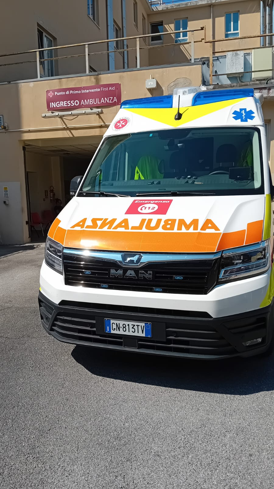
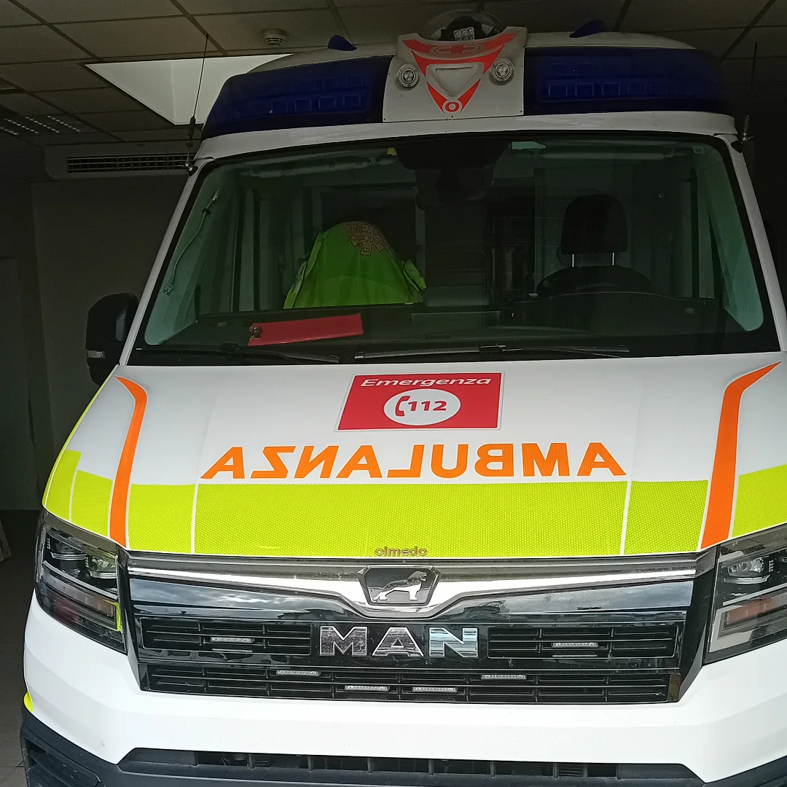

Documentiamo i mezzi di soccorso in azione sul territorio
Novità: Unisciti al nostro gruppo WhatsApp! 📲🚑🚒
Vuoi ricevere aggiornamenti in tempo reale su emergenze, mezzi in azione e notizie dalla nostra community?
Unisciti al gruppo WhatsApp ufficiale di FriuliEmergenze e resta sempre connesso con tutto ciò che accade in Friuli-Venezia Giulia e dintorni!
Siamo una community nata dalla passione per i mezzi di emergenza. Attraverso Instagram e altri canali, condividiamo foto, video e informazioni sui servizi di soccorso attivi in Friuli Venezia Giulia.
🤝 Collaborazioni
Lavoriamo con volontari, croci locali e servizi di emergenza per valorizzare il territorio.
Se vuoi collaborare con noi, anche per inviarci regolarmente foto di mezzi puoi contattarci a: spotter@friuliemergenze.it
🚒 Galleria

MAN TGE 3.180 Allestita Mariani Fratelli - SIERRA 271 - SOGIT Grado
VOLVO FL Allestito BAI - VVF Gorizia

MAN TGE 3.180 Allestita Olmedo - SIERRA 76 - SOGIT Grado